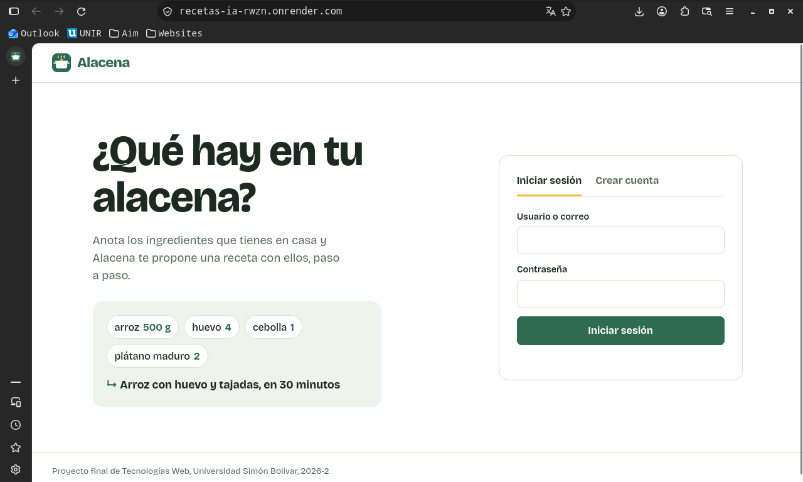
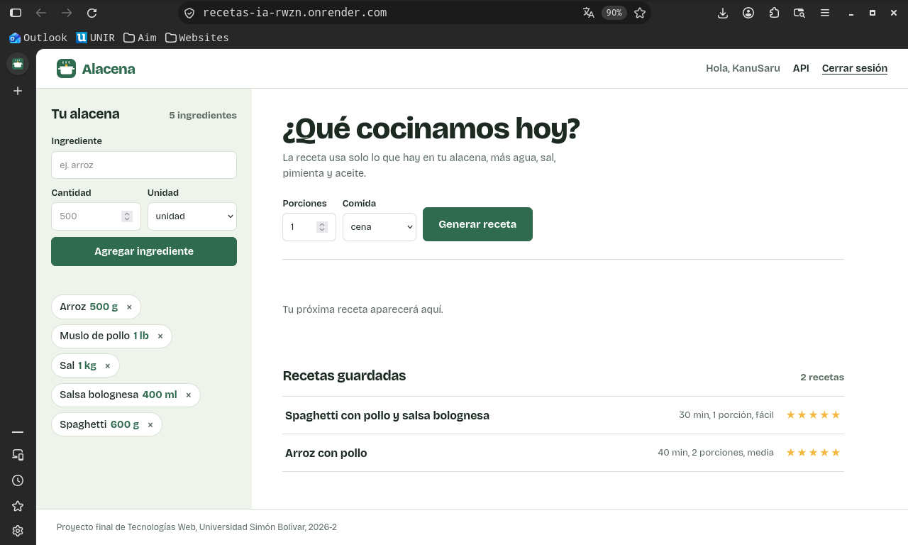
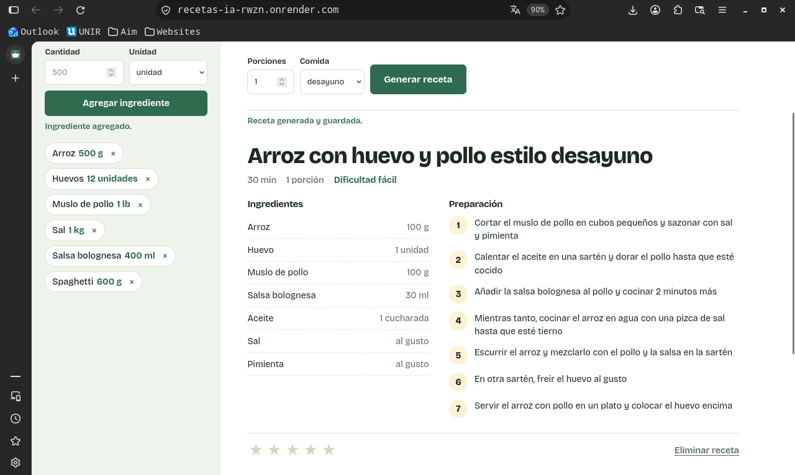
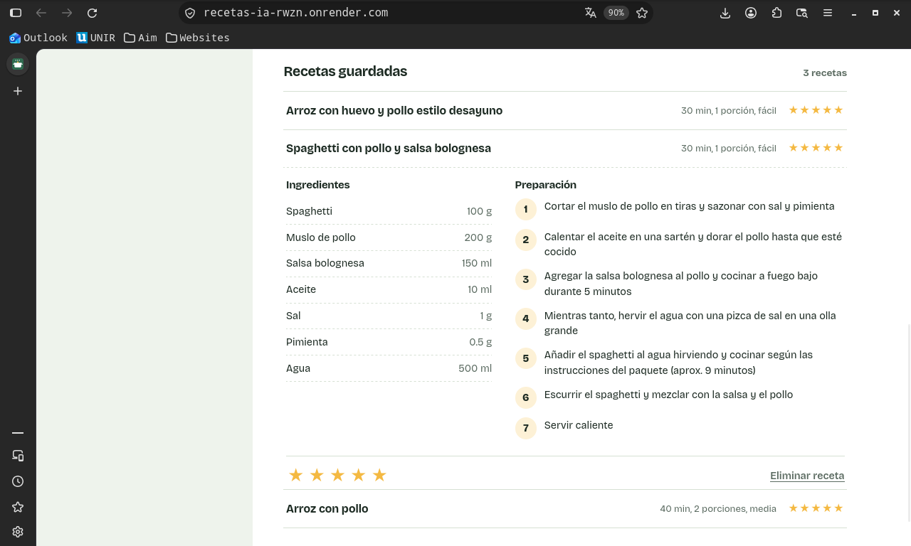
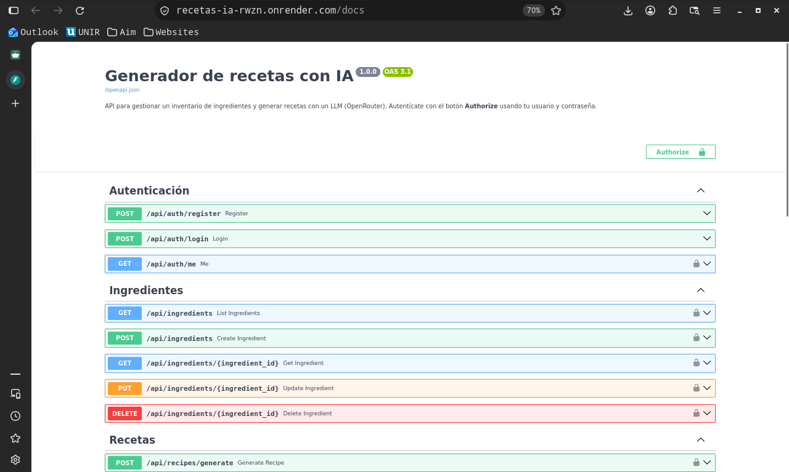

| Estudiante | Erick Fabián Donado Fonseca | Curso | Tecnologías Web (5916) · Grupo T02 · 2026-2 |
| Repositorio | https://github.com/KanuSaru/proyecto-recetas | Profesor | Rafael Bladimir Pérez Merino |
| Aplicación | https://recetas.tudominio.com | API | /docs (Swagger/OpenAPI) |
Aplicación web donde cada usuario registra los ingredientes que tiene en casa y obtiene recetas generadas por un modelo de lenguaje. Las recetas se guardan en la base de datos y se pueden consultar, calificar de 1 a 5 estrellas y eliminar. El backend es una API REST en Python + FastAPI; la interfaz es una página Jinja2 con JavaScript sin frameworks que consume la misma API con un JWT.
Flujo de generación. POST /api/recipes/generate lee el inventario del usuario autenticado y llama a LLMService. El servicio arma un prompt fijo (mensaje de sistema con el formato JSON exigido + inventario con cantidades, porciones y tipo de comida), lo envía a OpenRouter y pasa la respuesta por parse_recipe_response, que extrae el objeto JSON y lo valida contra el esquema RecipeLLMOutput: nombre, ingredientes[{nombre, cantidad}], pasos[], tiempo_estimado_minutos y dificultad (fácil/media/difícil). Solo si es válido se guarda la receta. El usuario nunca escribe texto libre para el modelo: no es un chatbot.
| Funcionalidad | Endpoints |
|---|---|
| Registro e inicio de sesión (JWT) | POST /api/auth/register · POST /api/auth/login · GET /api/auth/me |
| CRUD de ingredientes | GET/POST /api/ingredients · GET/PUT/DELETE /api/ingredients/{id} |
| Generar receta · historial | POST /api/recipes/generate · GET /api/recipes · GET /api/recipes/{id} |
| Calificar · eliminar | PUT /api/recipes/{id}/rating (1–5) · DELETE /api/recipes/{id} |
Un usuario tiene muchos ingredientes y muchas recetas; cada receta tiene como máximo una calificación (recipe_id único). La restricción UNIQUE(user_id, name) evita ingredientes repetidos en el inventario y CHECK stars BETWEEN 1 AND 5 garantiza la regla de calificación también a nivel de base de datos. Los ingredientes y pasos de la receta se guardan como JSON porque son el resultado ya validado del LLM y siempre se leen junto con la receta.
llm_service.py es el único módulo que habla con OpenRouter. El JSON del modelo se valida con Pydantic antes de guardarse; se toleran bloques ```json, texto alrededor y variantes como "30 minutos" o "facil". Si la respuesta es inválida se reintenta una vez y luego la API responde 502 sin guardar nada.user_id y un recurso ajeno responde 404.dependency_overrides, así que corren sin red, sin API key y sin gastar créditos.db (PostgreSQL, sin puertos públicos y con healthcheck), app (FastAPI, espera a que la BD esté sana) y caddy, que emite y renueva el certificado de Let's Encrypt automáticamente. Las credenciales viven en .env (ignorado por git); el repositorio solo incluye .env.example.
docs/capturas/01-login.png'">
docs/capturas/02-inventario.png'">
docs/capturas/03-receta.png'">
docs/capturas/04-historial.png'">
docs/capturas/05-swagger.png'">docker compose exec app pytest)